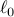

Genetic Network Identification using Convex ProgrammingA. Julius, M. Zavlanos, S. Boyd, and G. Pappas
IET Systems Biology, 3(3):155-166, May 2009. Gene regulatory networks capture interactions between genes and other cell substances, resulting in various models for the fundamental biological process of transcription and translation. The expression levels of the genes are typically measured as mRNA concentration in micro-array experiments. In a so-called genetic perturbation experiment, small perturbations are applied to equilibrium states and the resulting changes in expression activity are measured. One of the most important problems in systems biology is to use these data to identify the interaction pattern between genes in a regulatory network, especially in a large scale network. The authors develop a novel algorithm for identifying the smallest genetic network that explains genetic perturbation experimental data. By construction, our identification algorithm is able to incorporate and respect a priori knowledge known about the network structure. A priori biological knowledge is typically qualitative, encoding whether one gene affects another gene or not, or whether the effect is positive or negative. The method is based on a convex programming relaxation of the combinatorially hard problem of  minimisation. The authors apply the proposed method to the identification of a subnet work of the SOS pathway in Escherichia coli, the segmentation polarity network in Drosophila melanogaster, and an artificial network for measuring the performance of the method. |